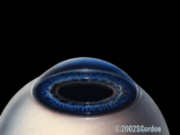

LASIK is a procedure that has the latest laser technology in refractive surgery to correct refractive errors. LASIK utilizes the precision of the computerized excimer laser delivery system to customize change in corneal curvature to bring light into proper focus.
ProcedureBy reshaping the cornea under a precision made flap, the comfort level and return to normal activities generally happens very quickly.
|
 |